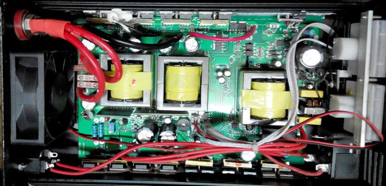
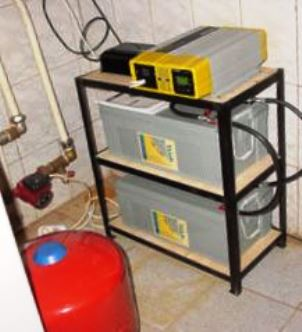
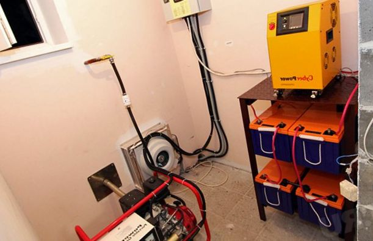

Качественный электромонтаж в Санкт-Петербурге и Ленинградской обл.
Тел. 8 904 642 08 57 Николай.
Николай.

Резервное электропитание.
Городской житель современного города редко сталкивается с проблемой отсутствия электроэнергии в городском жилище. Кратковременные отключения электроэнергии предусматривают резервирование разве что системного блока и монитора компьютера.
К чему приведет отключение электричества?
Другое дело, когда отключение электроэнергии происходит в загородном доме, коттедже. Тогда выключается освещение, отопление, сигнализация, словом вообще все. И самое плохое при этом, что не только выключается, но при большом перерыве и начинает выходить из строя. Система отопления перестает функционировать, и… дом перестает быть домом – нет ни света, ни воды, ни тепла, при этом замерзает и выходит из строя котельное оборудование, трубы водопровода, санитарное оборудование. В тех системах (водопровод, канализация) куда невозможно залить незамерзающий теплоноситель вообще происходит разрыв труб.
Сколько стоит сделать резервное электропитание.
Стоимость работы электрика от 10000 руб.
Ремонт от 4000 руб.
Понятно, что от этого ужаса спасает только использование резервных систем электроснабжения. Решение данного вопроса можно разбить на две категории – полное и частичное резервирование.

Полное или резервирование электропитания.
Полное – это тогда, когда резервируются все системы электропитания в доме. Простая задача, но очень дорогостоящая, требующая мощных источников электроснабжения, потому что потребляемая мощность среднего загородного дома доходит до десятков кВт. Не очень приятно, когда не работает, допустим, электрическая сауна. Но это – не смертельно, можно и обойтись.

Чаще всего резервирование осуществляют частично, высчитывая наиболее критичные в этом отношении участки, допустим, резервируют:
- все насосы отопления, водопровода и канализации;
- холодильник один или несколько;
- освещения кухни, лестницы, одной спальни;
- котельное оборудование;
- сигнализации;
- фильтрации воды.
К этому можно добавить еще несколько систем, а можно и сократить до минимума, зарезервировав только котельное оборудование, чтобы дом в холод не замерз.
Выбор невелик: генератор или инвертор.
Какое оборудование может использоваться при осуществлении резервирования загородного дома?
Основных направлений два – использование генераторов и на основе преобразования напряжения аккумуляторных батарей 12/24 вольта постоянного тока в переменное напряжение 220 вольт 50 Гц различными инверторами.
Резервирования электропитания генератором. И тот и другой способ резервирования имеет свои недостатки и достоинства. Применение генераторов лучше всего осуществлять при достаточно больших мощностях потребления. Можно также использовать недорогие бензиновые генераторы с воздушным охлаждением. Последний вариант достаточно экономичен, но имеет и недостаток – малую надежность и не всегда генерируют так называемую «чистую» синусоиду, которая необходима для работы насосного оборудования. В сильный мороз они могут, и не запустится. Для них требуется отдельное помещение. Они сильно шумят. Многие генераторы данной линейки не допускают многочасовую или многосуточную работу.
Резервирования аккумуляторными батареями.

Резервное электропитание на инверторах и батареях имеют много преимуществ – запускаются практически мгновенно, без постороннего вмешательства, не имеют системы выхлопа, работают практически бесшумно. Их мощность и время автономной работы зависит от типа использованного оборудования и от емкости аккумуляторных батарей. В этом и заключается их основной недостаток – аккумуляторы «садятся» и система перестает работать. Частичное решение данной проблемы – включение через определенное время недорогого генератора для их подзарядки. Но зато, если электропитание отключается часто на непродолжительное время (несколько часов). При работе резервного электропитания можно даже не заметить выключения электропитания.
Вообще применение той или другой системы резервного электропитания решается отдельно в каждом конкретном случае, в зависимости от поставленной задачи.

Сколько будут стоить материалы.
Расценки на электропроводку.
Электромонтаж в доме.
Замена электропроводки в двухкомнатной квартире?.
Сколько стоит сделать внутреннюю проводку?.
Установка люстр и светильников.
Электромонтаж проводов в бане.